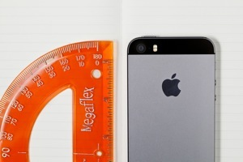
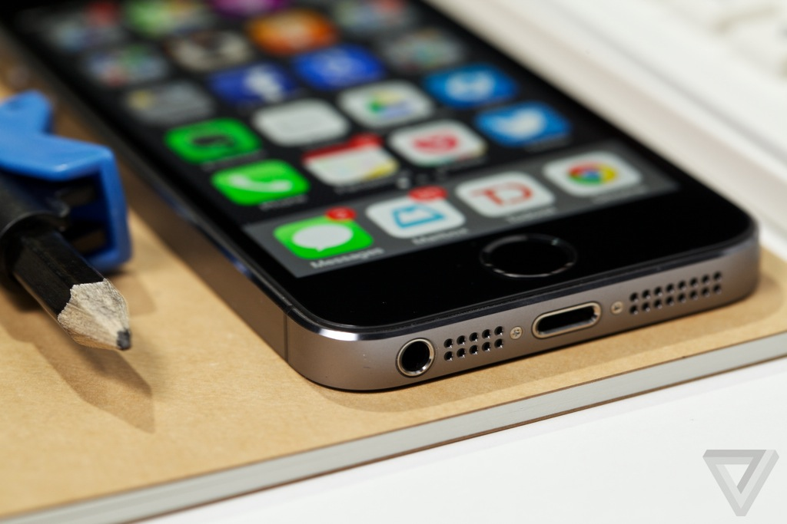
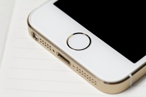
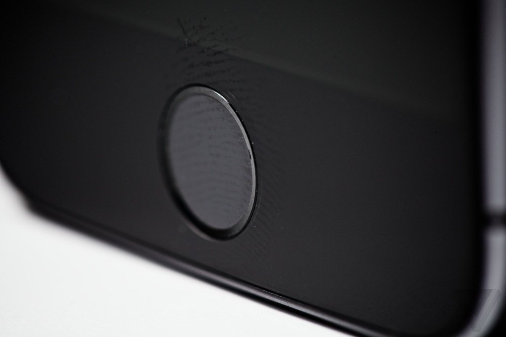
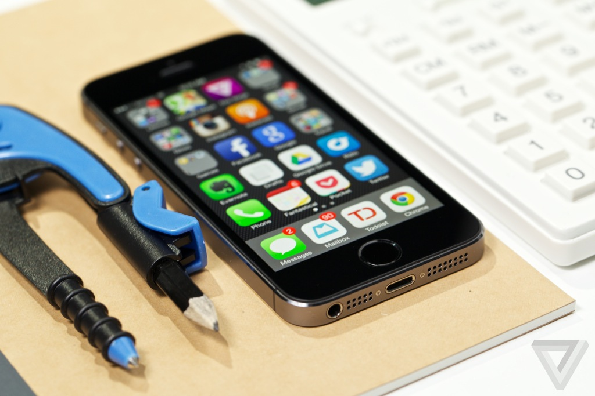
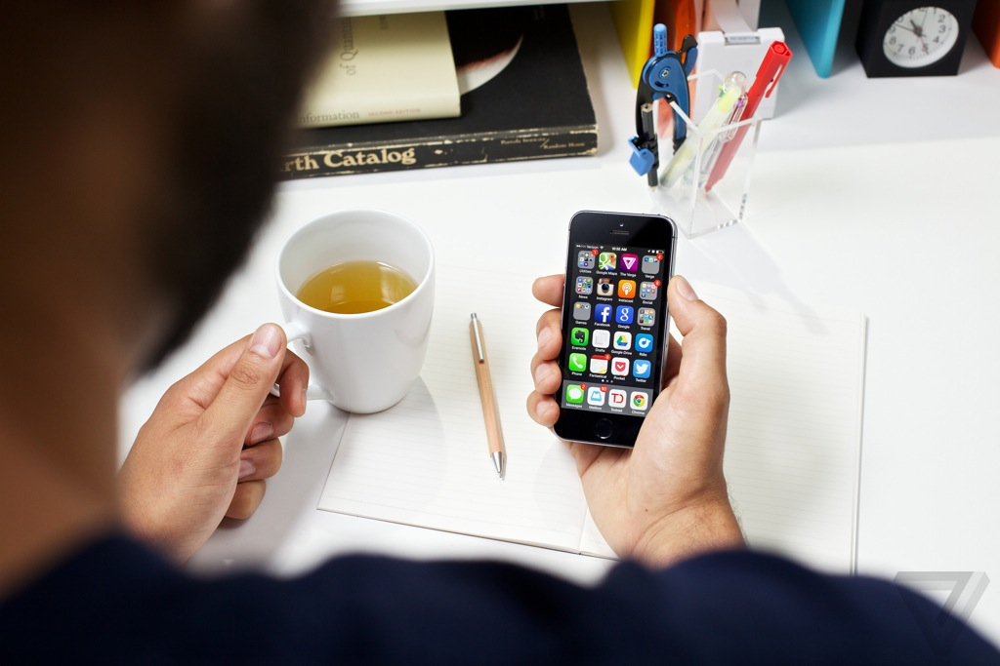
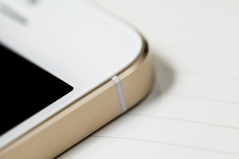
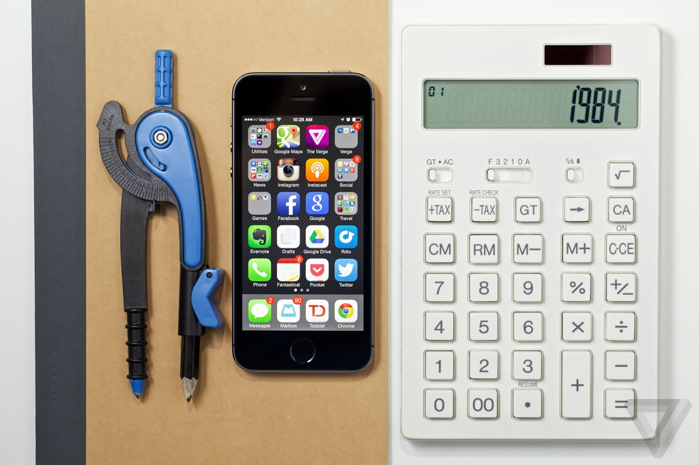
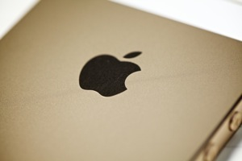
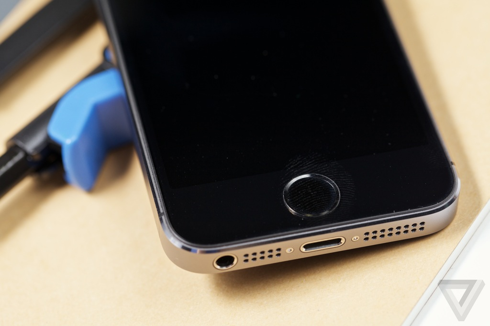

LG G2 review
LG G2 review
| Home | History Of smartphones | Reviews | Best cameraphones | Best android smartphones of 2013 |
iPhone 5S review
Is Apple's best iPhone ever really a better phone?

Apple has entered the spec wars.
The iPhone 5S isn’t just supposed to be “the most amazing iPhone yet.” It’s not “the thinnest and lightest iPhone ever.” No, Apple says the 5S is “the most forward-thinking iPhone yet” and “the best smartphone in the world.”
But the screen didn't get bigger, and the design hasn’t changed. Apple’s mid-cycle S updates are always about the little things: faster internals, a better camera, more memory. But this year little things have turned into big things: there’s upgraded 64-bit A7 processor and a hidden fingerprint reader, a better camera and a much-improved new flash. Add those to the new, wholly redesigned iOS 7 software, and Apple believes it has a phone that’s much more than just a refresh. For $199 plus a two-year contract, the 5S is Apple at its swaggering best, believing it can win the spec-sheet arms race while still offering a device anyone and everyone can use.
But can better specs really make a better phone, despite what Apple's told us all these years? Is this forward-thinking phone the right phone for right now?
Just like old times
I wish the iPhone 5S had a slightly larger screen — 4 inches feels smaller and smaller — but it’s otherwise hard to fault Apple’s basic design. The 5S is virtually unchanged from last year’s model, from the cold aluminum back to metal frame with chamfered edges. Even a year on, it’s one of the best smartphone designs ever — at once svelte and sturdy, machinelike and comfortable. Its only real rival is the HTC One, itself exquisitely made; I’d love for Apple to have come up with some thrilling new design here, but there’s always next year.
EVEN A YEAR ON, THE IPHONE'S DESIGN IS TOP-NOTCH

The practical upside to a 4-inch phone is that its 1136 x 640 display still looks great even as its resolution is lapped by the 1080p screens on the Galaxy S4 and HTC One. Even after spending time with those devices, the 5S’s display is still excellent — its remarkable color accuracy shows off the colorful iOS 7, and viewing angles are fantastic. At some point Apple will have to increase the iPhone’s screen size again, but for right now, it’s hard to find any other complaints about this display.
The phone may feel the same, but the finishes do look different. The basic colors are subtle: silver is essentially the same as it ever was, and the "space gray" is just a lighter version of last year’s black model. They’re both nice, but neither will turn the heads of iPhone 5-toting passersby. That effect is reserved for the gold model, a champagne-colored device with white
accents that really is a sight to behold. It’s not gaudy or ostentatious, like something Vertu or Porsche would make. It’s just classy and unique. It doesn’t quite mesh with the bright blues and greens that are all over iOS 7 the way the candy-colored iPhone 5C does, but it’s a gorgeous piece of hardware.
The gold shines brightest on the circular rim around the new home button — it’s color-matched to whatever device you buy, but it only really stands out on the gold 5S. The home button looks different, with no square icon in the center and a metal ring around the concave button, but the look portends an even bigger change in how your home button works.

The touch, the feel
Using Apple’s Touch ID fingerprint security system feels very much like being in a secret agent movie: you pull the phone out of your pocket, touch the ringed home button (which is now much more tactile, directing your finger to exactly the right spot), and presto — you’re in.
Setting up Touch ID takes a couple of minutes, during which you place your finger on the device every which way so it can learn the ins and outs of your print so it can learn who you are. Once it gets all the data it needs, Touch ID uses your fingerprint — you can teach it as many as five, and I recommend doing at least both thumbs — to let you unlock your phone without a passcode and buy things in Apple’s stores without a password.

It requires a bit of patience at first, but once it figures out all the crazy, misaligned ways you might mash on the button, it works pretty reliably. And if it can’t figure out who you are, which happened once when I had crumbs all over my fingers and again when I had wet hands, it goes back to your four-digit PIN.
Most importantly, it’s virtually instantaneous. I assumed I’d rather type in a passcode, because even if it’s slower at least I’m doing something, but Touch ID rarely take more than a single beat before the gates open and iOS 7 falls into place.
Apple says Touch ID only stores your fingerprints in special encrypted memory on the phone itself, where the data is accessible to neither Apple’s servers or the NSA, nor to anyone else.
SECURITY TRUMPS USABILITY
WITH TOUCH ID
That’s comforting, but at the moment it limits the obvious possibilities — as with many things in iOS, the tremendous potential of Touch ID is restricted to Apple’s own apps and unavailable to third parties. Being able to authenticate Google Wallet or PayPal or even Facebook would be great, and Touch ID could be tremendous if it could effectively password-protect certain apps. (Sorry, friend, you can’t tweet from my phone.)
So for now Touch ID is a useful tool, but it can feel like Apple’s deployed an amazing amount of technology just to make it slightly easier to buy things from its stores. But that’s now — with some development Touch ID could become truly spectacular. I know I’m already annoyed every time I actually have to type or swipe to unlock another phone — I just want to touch it and open the vault.

Future-proofing the
smartphone
Apple’s spent more time talking about the 5S’s specs than I’ve ever seen the company do in the past, but the improvements are hard to evaluate. In benchmarks, the new A7 processor is spectacular — the top of its class in nearly every way. Games look fantastic, with nary a skipped frame and faster loading times than ever; even apps seem to open and close just a little bit faster than before. But the iPhone 5 wasn’t exactly getting long in the tooth, and we’ve had no problematic performance issues on the 5C either. Side-by-side in daily tasks, the 5S isn’t so much faster than the 5 or 5C that you’ll notice right away — it’s not like the animations in iOS 7 are running any faster.
What the 5S and the A7 really have going for them are longevity. There’s so much raw power here that it’s going to be a while before apps take real advantage. Infinity Blade III, Apple’s traditional barometer of a new iPhone’s processing ability, looks better on the 5S than the 5, with sharper graphics and crisper transitions between scenes, but it’s not a wild new level of performance. There’s plenty of headroom here, though, and it means that after two years the 5S is probably going to be able to keep up far better than most of its predecessors did.

The M7 "motion coprocessor" is maybe even more interesting than the A7 itself. It’s designed to collect data from the accelerometer, gyroscope, compass, and others, and to use that data to determine the state of your phone without sucking battery life. The processor means the 5S knows if you’re driving; it knows when you stop driving and start walking; it knows when you haven’t picked the phone up for a few hours, and it can stop downloading new email so often because you’re either sleeping or you left your phone at home. This is another feature with only a few implementations — Maps changes the type of directions it gives you depending on whether you’re walking or driving — but my mind’s reeling with the possibilities. What if Twitter could update every time I picked up my phone, because the first thing I do is always open Twitter? What if I don’t have to wear a Fitbit anymore? What if location-based apps like Foursquare weren’t such battery hogs? We can only dare to dream.
THE NEW PROCESSORS ARE COOL, BUT THEY'LL BE MORE
USEFUL SOON
Like the Moto X, the iPhone 5S has an entirely new ability to discern what I’m doing with my phone all the time — if it can react, or learn from my actions, it could make using a cellphone faster and more intuitive than ever. But all of that is speculation right now — another "if" for Apple and its developers to deliver on
Call quality in general is very good, as much as any cellphone's can be — the more I use FaceTime audio, typically by forcing friends and family to use it with me, the more I realize how bad call quality normally is. But the iPhone is generally good enough, and plenty loud that I can always hear and be heard. Reception is good, and it’ll be good in more places than ever thanks to expanded LTE support in more and more countries. New York City is always a hellish nightmare of LTE service, but the 5S did as well as I could ask.

Maybe it was unreasonable to expect better battery life, but the 5S does have a bigger battery than the 5 — a popular spec bump for Apple and its competitors this year. But what the 5S may have gained in capacity it gives back in consumption, and battery life here seems to be almost exactly what we’ve seen on the 5 — it’ll last you a full day, but nothing more, and often less if you have an itchy Netflix finger or get lots of email and other notifications. Maybe now, with future-friendly power in its processor, Apple can figure out how to make it last longer. Or maybe it should just make a bigger phone with a bigger battery. Either way would be fine.

Overall, it adds up to an impressive spec sheet that matches up with the best in the industry, but like all spec sheet battles, the overwhelming story of the 5S is to hurry up and wait. Touch ID, the A7, the M7 — they’re all good now, Apple seems to be telling us, but just wait and see what we can do. Even iOS 7 feels that way, with its spartan Today screen and locked-down sharing menu, its teasingly useful Siri features that still stumble all too quickly, and animations that seem to be running at demo speed. While Android has become a fast, fun, fluid operating system, iOS remains a mostly siloed set of apps and services, with notifications and multitasking features that still feel unfinished.
I’m growing accustomed to iOS 7’s constant animations, stark white backgrounds, and text-heavy design — but I’m still not totally sold on Apple’s new direction.
The new coat of paint is mostly a good thing, but it can’t change the fact that parts of iOS are still really lacking. And without the awesome color-coordination of the iPhone 5C, the bright operating system is in stark contrast to the understated hardware.
There is one place where iOS 7 and the iPhone 5S fully embody Apple’s vision of integrated hardware and software: the camera. The iPhone 5S’s camera is incredible.
The perfect shot
The Lumia 1020 may offer you 41 megapixels and endless flexibility, but for virtually every practical point-and-shoot purpose the 8-megapixel iPhone 5 was the best smartphone camera on the market — and the 5S is even better. Apple didn’t sacrifice sharpness for low-light capability, like the HTC One and its Ultrapixel camera, and it hasn’t traded quality for simplicity, like the Moto X. Apple just took a great camera and improved both the hardware and software. The sensor is still 8 megapixels, but it’s slightly larger in size, which means each individual pixel is slightly bigger and collects more light. That means better low-light performance and crisper shots all around, and it delivers.
The iPhone 5S takes excellent pictures, better even than the iPhone 5. Things are a little sharper and more detailed even in good lighting, but the real difference comes at night. The 5S is noticeably better in low-light conditions — where the 5 used to capture only silhouettes and often just black, the 5S can get usable pictures. Same goes for the new 1.2-megapixel front-facing FaceTime camera — awkwardly dark video calls and Snapchats are now totally in play, for better or worse.

The new, faster A7 processor flexes its muscles when the camera’s running. There’s a new burst mode, which I quickly started using all the time: it shoots 10 frames per second, and then either automatically selects the best of your photos or lets you choose your favorite. (I always picked my own — the automatic setting was hit and miss.) Once you’ve selected your favorite, you can easily delete the rest of the burst, which is extremely handy — no one needs all those shots of the same thing cluttering up their camera roll and Photo Stream. Since the iPhone 5S can still take a moment or two to focus, it’s prone to missing the perfect shot — burst mode all but solves that problem.
The new processor also enables slow-motion video, letting you shoot 720p at 120 frames per second and then play it back at a quarter speed. It starts the clip at normal speed, drops into slow-mo, and then speeds back up right at the end just for effect. Get ready for a lot of iPhone slow-mo footage to pop up — pretty much everything looks awe-inspiring in slow motion, and using it is addictive.
There are some other new camera features as well: Apple’s added live filters in the camera app, which are interesting but not quite as artistic as Instagram’s, zooming is now possible while you’re recording video, and there’s automatic digital image stabilization. None are exactly earth-shattering features, but all are nice to have. Same goes for the new True Tone flash, which fires two lights designed to balance with the scene around you and light your subject better; it works as well as any flash can, with far more balance, but you’re still much better off not using a flash at all. Luckily, most of the time you won’t have to.
CLICK HERE FOR A GALLERY OF SAMPLE IMAGES
FROM THE 5S
The 5S basically works like a point-and-shoot, and most of the time takes pictures like one too. For many people, the 5S will be the best camera they own. It really is a remarkable advancement, even if it doesn’t feel like a total overhaul.

Wrap-up

Apple IPhone 5S
GOOD STUFF BAD STUFF
- Beautiful design 4-inch phones are starting to feel small
- Super fast processor iOS is far from perfect
- Fantastic camera
SMALL TWEAKS ADD UP
TO BIG CHANGES

The most remarkable thing Apple did with the iPhone 5S was to change everything while appearing to change almost nothing. The processor’s faster, the camera’s brighter, and the software’s a little smarter. But rather than club you to death with features to prove just how many things this phone can do, the iPhone 5S simply does everything it did before, better. Even the new things feel integrated, and obvious — Touch ID has quickly come to feel completely natural, and slow-motion video now feels notably absent from the iPhone 5. There aren’t two dozen different multitasking systems or countless camera modes; the 5S is just more capable and more intuitive than ever before. It’s easily the best iPhone ever made, and maybe the best smartphone ever made.
But there’s a downside to forward thinking. Apple’s made a phone that’s going to last, that appears to be ready for whatever technical innovation the industry develops or crazy games we decide to play. But until those things come along, that preparedness can feel very much like Apple’s simply made minor changes. Today, the 5S is but a minor

improvement over the 5, with only the camera and perhaps Touch ID truly counting as purchase-worthy upgrades. But as Apple learns to make use of its motion processor, its 64-bit operating system, and its fingerprint sensor, and teaches its developers to do the same, the 5S will get far better.
That's the best thing about the iPhone 5S: at the end of your two-year contract, it's still going to be a great phone — maybe even better. That’s the best reason to fight the spec wars.